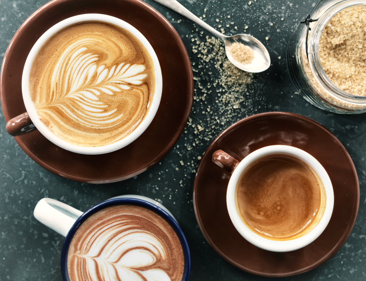

Dedicated to providing freshly brewed coffee from around the world
We provide the best coffees in the area, as well as an assortment of freshly baked goods
Different ways to brew coffee:
- Cafetiere - fast and easy, free from filters
- Chemex - picks up subtle flavours from coffee, makes a smooth brew
- V60 - similar to Chemex, suitable for making one or two coffees at a time
- Aeropress - stronger, full-bodied coffee for one person
- Mokapot - brewed on the stove; makes a thick, muddy coffee that can be served strong or topped with hot water
- Espresso Machine - all about creating pressure to quickly extract the intense flavours for a "shot" of espresso with a luxurious crema on top
